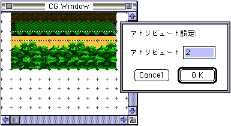
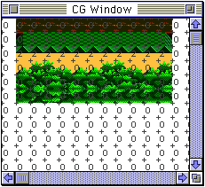
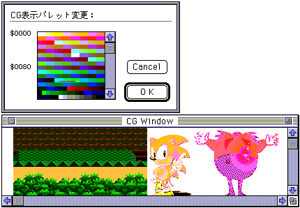
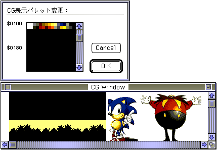
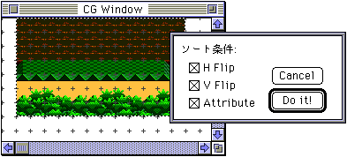
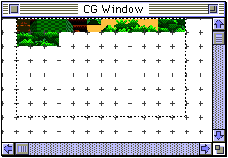
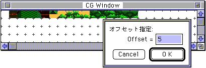
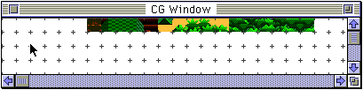

★Graphic Tools Guide
★MAP/SCREENエディタユーザーズマニュアル
★Graphic Tools Guide
★MAP/SCREENエディタユーザーズマニュアル
▲
戻る｜
進む▼
MAP/SCREENエディタユーザーズマニュアル
■キャラクタの編集
- キャラクタデータは、イメージウインドウからPasteされることによって新規作成されます。他アプリケーションからCopy＆Pasteも可能です。
長方形選択ツール・選択ツールで範囲を指定し、Copy&anp;Paste、配置変更、或いはイメージメニューとの組み合わせで各種編集を行います。
なお、オプション機能として、選択範囲の配列をそのままのイメージで、Mapウインドウに対しCopyを行うことができます。
- ●アトリビュートの設定
- アトリビュートは、各キャラクタに割り当てられる補助情報です。基本的にマップに対してプログラム側で処理するための任意データを設定することができます。
- イメージメニューの「アトリビュート」を選択するとアトリビュート設定ダイアログが開きます。
ここで入力された値が指定範囲のキャラクタに対してアトリビュートデータとして設定されます。

- 設定されたアトリビュートデータを確認するためにはオプションメニュー「表示」のアトリビュートの項をチェックしてください。

- ●表示パレット
- CGデータ自体はパレットの情報を持たないため、CGウインドウ上のキャラクタは、仮に設定されたパレットのカラーで表示されています。
複数パレットの使用を想定してキャラクタを登録していく場合、設定されたパレットでは編集作業に支障をきたす場合には、イメージメニューの「表示パレット」を選択して表示用のパレットを変更してください。


- パレットの変更は常にCGウインドウの全キャラクタ領域に影響します。
また、マップへ登録されるデータには、その時点で指定されているパレット情報が付加されます。
- ●ソート
- 重複するキャラクタをいくつかの条件付きで検索して一つのキャラクタにまとめます。
まず、ソートする範囲をCGウインドウ上で指定し、イメージメニューの「ソート」を選択すると、ソート条件指定用のダイアログが表示されます。

- 必要な条件を設定して、ソートを実行します。

- ソートによって移動した各キャラクタについての情報はマップデータに反映します。
- ●オフセット
- 登録済みの全キャラクタの登録位置（キャラクタ番号）を指定キャラクタ数分後方へ移動させます。
イメージメニューの「オフセット」を選択すると、オフセット値入力用のダイアログが表示されます。

- オフセット指定によって移動した各キャラクタについての情報はマップデータに反映します。

- ●使用チェック
- 登録されたキャラクタからマップデータとして未使用のものを０番キャラクタに置き換えます。
この作業の後に、未使用キャラクタ領域を前詰めする等の必要がある場合は「ソート」を併用してください。
▲
戻る｜
進む▼
★Graphic Tools Guide
★MAP/SCREENエディタユーザーズマニュアル
Copyright SEGA ENTERPRISES, LTD., 1997